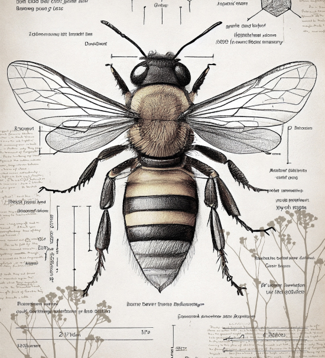
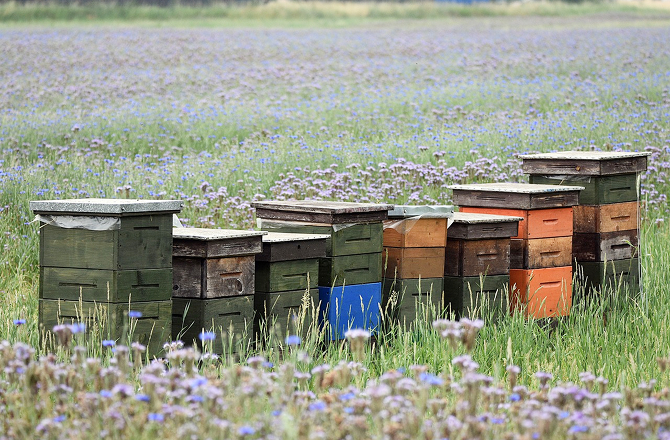
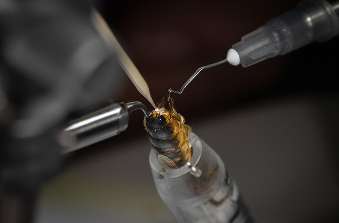
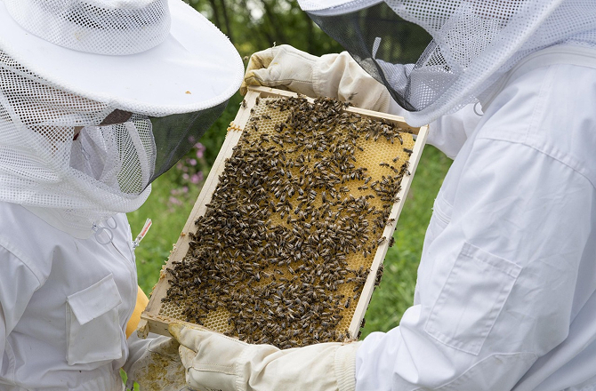
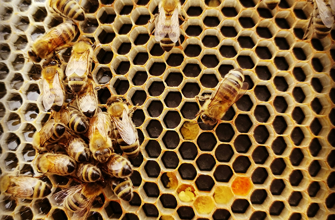
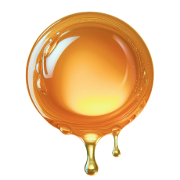
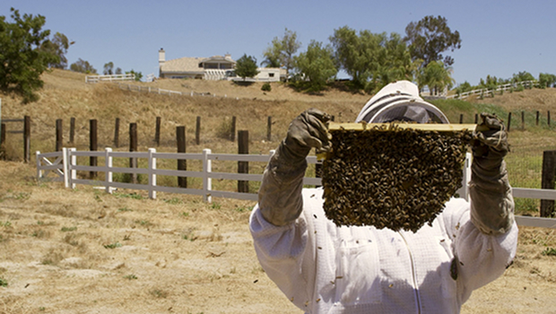

home > 산업곤충연구 > 꿀벌
꿀벌
안녕하십니까.
예천곤충연구소&곤충생태원에 방문하신 것을 환영합니다.
연구배경

여왕벌의 공중교미 습성으로 꿀벌의 무작위 교배로 수밀능력 저하
기후변화로 꿀 생산 불안정, 우수 꿀벌품종에 대한 농가요구 급증
주요업무
- 꿀벌 5계통 보존
- 
도서지역 격리 교미장을 통한 보존
- 
인공수정을 통한 보존
- 
꿀벌육종을 통한 품종개발
- 
경북지역 서양종 꿀벌 지역적응시험
연구성과
- 육성경과
- 2008년 : 국내 계통수집 및 근교 계통 확립 6계통 (A/C/D/E/F)
- 2010년 : 6계통 간 11개 교배조합 작성
- 2013년 : 수밀력 우수 삼원교배종의 여왕벌육성 선발 (농촌진흥청 잠사양봉소재과 공동)
- 2014년 : 국가 꿀벌 정부장려품종 '장원' 등록
- 2015년 : 국립 유전자원 관리기관 지정
국내최초 꿀벌 신품종 '장원' 주요 특성
-

꿀 수집능력 31 % 향상
-
질병저항성 증가
-
생존력 증가
-
사료비 절감
-
도봉 감소
-
봉군 관리 노력 감소(온순)
연구 현황
- 벌꿀 다수확 품종 선발연구 현황
- 2008 ~2009 : 우수 품종 수집 및 순계분리 (8계통)
- 2009 : 단교배종 4계통 육성 (a*b 외), 근교배 통한 계통유지 기술개발
- 2010 : 삼원교배종 6계통 육성 (ac * d 외)
- 2011 : 삼원교배종 4계통, 복교배종2계통 추가육성 및 계통유지 기술개발
- 2010 ~ 2012 : 11계통 육성 교배종에 대한 능력평가(자체평가)

- 관내 농가 현장 실증시험
- 2011년 : 양봉 5농가 총 40봉군 실증시험 (벌꿀, 로열젤리 다수확 종)
- 2012 ~2014년 : 10농가50봉군 확대 실험 (벌꿀 다수확 품종)
- 벌꿀 다수확종 최종 선발 및 신품종 발표
- 2013. 7. : 농진청 공동연구를 통한 벌꿀 다수확 품종 육종 발표
- 2015. 1. : 종보존소 지정 및 '장원벌'국가 공인 등록
- 2016. 4. : 울릉도와 MOU체결을 통한 '장원벌' 생산 단지 조성
- 2016 ~ 2017 : 로열젤리 우수품종 농진청 공동연구 수행